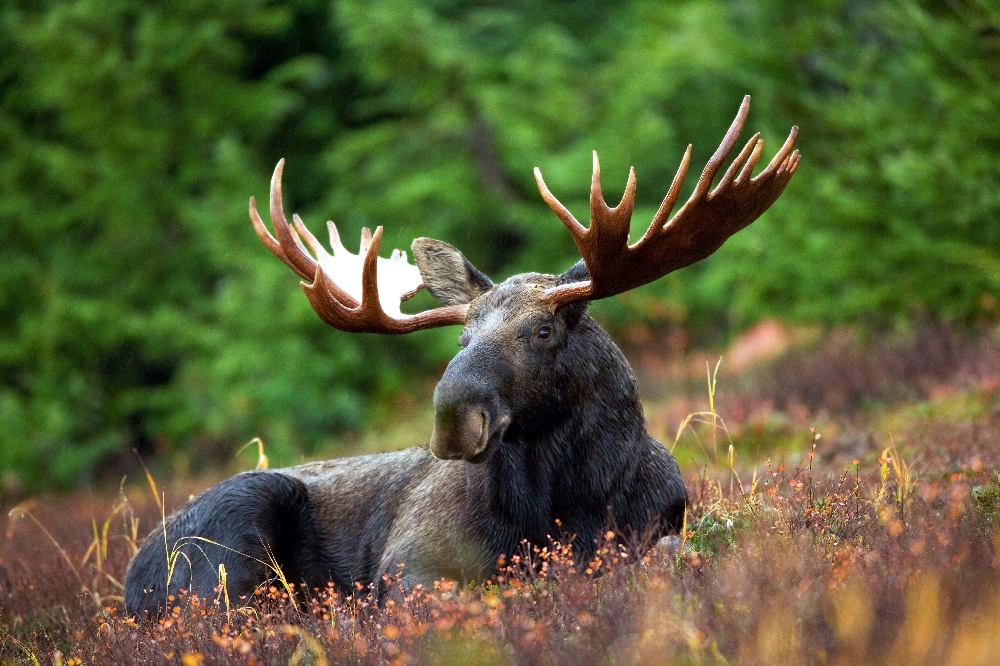
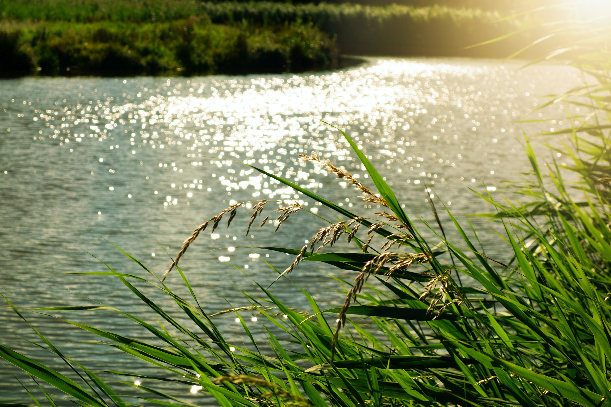

Kampinoski Park Narodowy
Tuż za zachodnią granicą miasta rozciąga się Puszcza Kampinoska. To wielki przywilej i korzyść dla Warszawiaków, że obok największego miasta w Polsce leży tak wspaniały Park Narodowy...

Lasek na Kole
Nieopodal tramwajowej zajezdni "Koło", przy ulicy Obozowej, leży mały, miejki lasek. Często goszczą w nim mieszkańcy Woli i Bemowa. Łatwy dojazd oraz możliwość oderwania się od miejskiego zgiełku czynią to miejsce niezwykle atrakcyjnym...

Wieliszewskie Łęgi
Obok Zalewu Zegrzyńskiego, na zachód od miejscowości Rybaki, w pradolinie Narwi leży Rezerwat "Wieliszewskie Łęgi". Jest to miejsce obfitujące w moc przyrodniczych ciekawostek: wydmy, bagna, starorzecza...